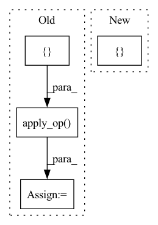

Pattern ID :14733

Before Change
hashed_cross_op = ops.HashedCross([cat_names], [num_buckets])
columns_ctx = {}
columns_ctx["categorical"] = {}
columns_ctx["categorical"]["base"] = list(cat_names)
// check sums for determinancy
checksums = []
for gdf in dataset.to_iter():
new_gdf = hashed_cross_op.apply_op(gdf, columns_ctx, "categorical")
new_column_name = "_X_".join(cat_names)
assert np.all(new_gdf[new_column_name].values >= 0)
assert np.all(new_gdf[new_column_name].values <= 9)
checksums.append(new_gdf[new_column_name].sum())
for checksum, gdf in zip(checksums, dataset.to_iter()):
new_gdf = hashed_cross_op.apply_op(gdf, columns_ctx, "categorical")
assert new_gdf[new_column_name].sum() == checksum
@pytest.mark.parametrize("gpu_memory_frac", [0.01, 0.1])
After Change
@pytest.mark.parametrize("engine", ["parquet", "csv", "csv-no-header"])
def test_hashed_cross(tmpdir, df, dataset, gpu_memory_frac, engine):
// TODO: add tests for > 2 features, multiple crosses, etc.
cat_names = [["name-string", "id"]]
num_buckets = 10
hashed_cross = cat_names >> ops.HashedCross(num_buckets)
In pattern: SUPERPATTERN
Frequency: 3
Non-data size: 4
Instances
Fragment ID: 48490146
Project Name: nvidia/nvtabular
Commit Name: 4c92dffac4354d816178264bcfcdec722db2ec1c
Time: 2021-01-05
Author: github@benfrederickson.com
File Name: tests/unit/test_ops.py
M Class Name: AnonimousClass
N Class Name: AnonimousClass
M Method Name: test_hashed_cross(5)
N Method Name: test_hashed_cross(6)
M Parent Class:
N Parent Class:
M File Name: tests/unit/test_ops.py
N File Name: tests/unit/test_ops.py
M Start Line: 1058
M End Line: 1085
N Start Line: 659
N End Line: 674
'>
Before Change
)
columns = ["userid", "timestamp"]
columns_ctx = {}
columns_ctx["all"] = {}
columns_ctx["all"]["base"] = columns
op = ops.DifferenceLag("userid", shift=[1, -1], columns=["timestamp"])
new_gdf = op.apply_op(df, columns_ctx, "all", target_cols=["timestamp"])
assert new_gdf["timestamp_DifferenceLag_1"][0] is None
assert new_gdf["timestamp_DifferenceLag_1"][1] == 5
assert new_gdf["timestamp_DifferenceLag_1"][2] == 95
After Change
{"userid": [0, 0, 0, 1, 1, 2], "timestamp": [1000, 1005, 1100, 2000, 2001, 3000]}
)
diff_features = ["timestamp"] >> ops.DifferenceLag(partition_cols=["userid"], shift=[1, -1])
dataset = nvt.Dataset(df)
processor = nvtabular.Workflow(diff_features)
processor.fit(dataset)
'>
Fragment ID: 48490114
Project Name: nvidia/nvtabular
Commit Name: 4c92dffac4354d816178264bcfcdec722db2ec1c
Time: 2021-01-05
Author: github@benfrederickson.com
File Name: tests/unit/test_ops.py
M Class Name: AnonimousClass
N Class Name: AnonimousClass
M Method Name: test_difference_lag(0)
N Method Name: test_difference_lag(0)
M Parent Class:
N Parent Class:
M File Name: tests/unit/test_ops.py
N File Name: tests/unit/test_ops.py
M Start Line: 1031
M End Line: 1041
N Start Line: 633
N End Line: 641
'>
Before Change
op = ColumnSimilarity(
"output", "left", categories, "right", metric="inner", on_device=on_device
)
df = op.apply_op(
cudf.DataFrame({"left": [0, 0, 0, 0, 4], "right": [0, 1, 2, 3, 5]}), None, None
)
assert float(df.output.values[0]) == pytest.approx(3)
After Change
)
)
input_df = cudf.DataFrame({"left": [0, 0, 0, 0, 4], "right": [0, 1, 2, 3, 5]})
op = ColumnSimilarity("output", "left", categories, "right", metric=metric, on_device=on_device)
workflow = nvtabular.Workflow(cat_names=["left", "right"], cont_names=[], label_name=[])
workflow.add_feature(op)
'>
Fragment ID: 48490133
Project Name: nvidia/nvtabular
Commit Name: bf3a8714a8310adc45ca215552c74c88ea555ec1
Time: 2020-08-21
Author: github@benfrederickson.com
File Name: tests/unit/test_column_similarity.py
M Class Name: AnonimousClass
N Class Name: AnonimousClass
M Method Name: test_column_similarity(2)
N Method Name: test_column_similarity(2)
M Parent Class:
N Parent Class:
M File Name: tests/unit/test_column_similarity.py
N File Name: tests/unit/test_column_similarity.py
M Start Line: 36
M End Line: 58
N Start Line: 37
N End Line: 63